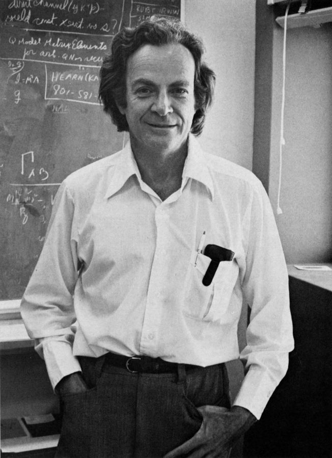
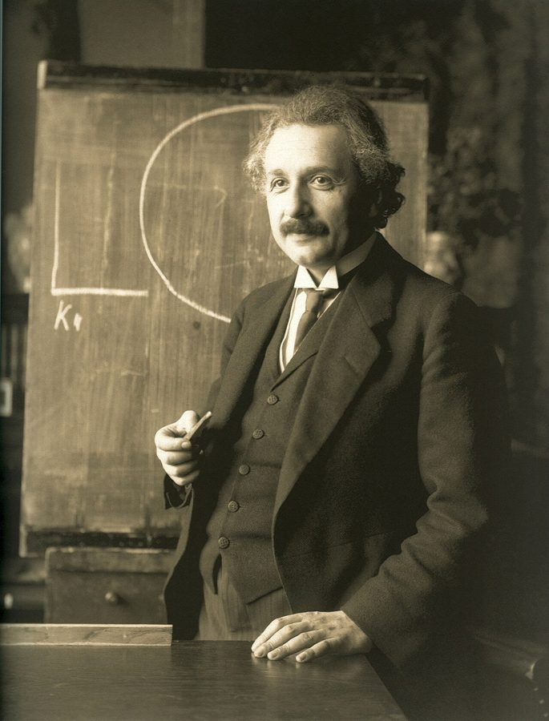
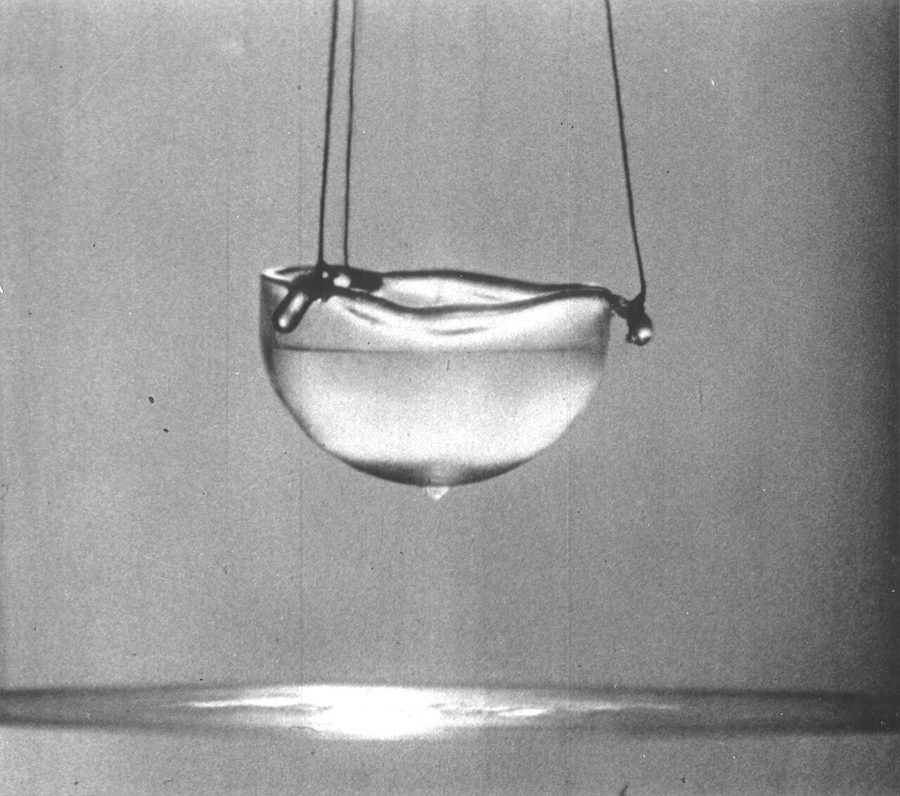

这一章在做什么
几乎整章都是费曼在说话（斜体）：题目怎么挑，难题怎么啃。他把问题分成两类，说自己靠「骗自己」才坚持得下去，又承认手头的 QCD 做了几年没做出来。
这是录音稿，句子零碎，别逐词抠，每段抓一句结论。最后四段换回作者，讲物理为什么是门手艺，以及这道题后来的下落。
费曼说的两类问题：难处在哪一头？
第一类
发现问题
解出来
难在看出「这里有个问题」，
要靠想象力；解法反而平常
第二类
发现问题
解出来
问题人人看得见，没人会解
例：爱因斯坦的广义相对论
例：费曼手头的 QCD
本站示意图。色条越长表示越难。这一章费曼举的两个例子都属于第二类。
背景：作者默认你知道的事
这一章的难点不在生词，在费曼的说话方式，和他随口提到的几样东西。
斜体段落是录音，不是文章
作者把磁带上的话照原样记了下来。所以会有：没头没尾的残句（To invent a way of doing it. ）、说到一半改口、不合语法的搭配、反复出现的 sort of 、kind of 、well 、now 。这些口头禅没有实义，读的时候划掉就行。代词 it 、that 、they 指什么，往前一两句找。下面词条里凡是这种地方都标了「口语」。
蜈蚣的典故
一条蜈蚣（摄于瓜德罗普）。centipede 字面是「一百只脚」。
Filo gèn'，2021，CC BY-SA 4.0，维基共享资源
英语里有个老寓言：蜈蚣本来走得好好的，有人问它「你迈腿的顺序是怎样的」，它一琢磨，反而不会走了。意思是熟练的事一旦逼着自己讲清楚步骤，就做不成了。费曼第一句就用它：你问我怎么解题，我也说不上来。
「巴比伦式」和挥手
第 4 章讲过：费曼把物理学家分成两种。希腊式的讲究公理、证明、严格；巴比伦式的只管方法好不好用，靠直觉和物理图像往前走。费曼自认是后者，盖尔曼是前者。
hand-waving （挥手）是物理圈的行话：不做严格推导，比划着讲个大概。多半是贬义，费曼却拿它当正经方法。
他说的「身体撑不了那么久」

费曼，1980 年代，在加州理工。
加州理工年刊 The Big T，公有领域，维基共享资源 序言交代过：这些谈话发生时费曼 63 岁，刚做完第二次癌症手术。所以他在第 14 段轻描淡写带过的那半句话，作者单独用一段接住（第 15 段的「死亡天使」）。他已有终身教职，不用赶时间出成果，可是他剩下的时间本身不多了。
这一章的物理，先用中文过一遍
这一章提到三块物理，都是费曼拿来当例子的：爱因斯坦怎么改引力，他自己手头的 QCD，他早年解开的液氦。按书里出现的顺序过一遍。
爱因斯坦的两个相对论

爱因斯坦，1921 年在维也纳讲课时。
Ferdinand Schmutzer 摄，Adam Cuerden 修复，公有领域，维基共享资源 狭义相对论 （special relativity，1905）：光速 c 是上限，什么都快不过它。广义相对论 （general relativity，1915）：把引力也改写了。
中间隔了十年，卡在哪？牛顿的引力是「瞬间」传到的，等于速度无穷大，这和「速度有上限」矛盾。费曼的意思是：矛盾谁都看得见，怎么改才是难处。
太阳
地球
牛顿的引力：瞬间就到，速度无穷大
相对论：最快是光速，这段路光要走 8 分多钟
两条对不上，所以引力理论必须改
本站示意图（不按比例）。这就是第 4 段里费曼说的 You can’t have that 。
下落的东西没有重量
费曼说爱因斯坦用了「东西下落时没有重量」这件事。下落的电梯里，人和地板一起掉，脚踩不实，感觉不到重量，和飘在太空里一样。爱因斯坦从这个观察出发，一步步造出了新的引力理论。
下落
自由下落的电梯里
人和手里松开的球一起飘着
分不出来
远离星球的飞船里
没有引力，人和球也飘着
本站示意图。第 6 段那句 things were weightless when they fell 说的就是左边这种情况。
费曼手头的题：QCD
费曼正在啃的题是量子色动力学 （QCD），上一章讲过的强力理论。它的处境很特别：方程有了，实验数据也早就有了（质子、中子的各种性质都量过），缺的是从方程算出这些性质的办法 。
用程序员的话说：需求文档和测试用例都齐了，源码也有，就是这段代码没人跑得动，也没人能看着源码推出输出。
费曼的打法分两步。先试各种数学技巧硬解，试了两年都不行。然后退一步，先弄明白它定性 上怎么运转（大致是什么样子），指望由此猜出该用哪种数学。到谈话时他只做到定性这一步，定量 的（能算出数的）没做出来。
后面作者解释为什么这很正常：物理里能「精确求解」的问题极少。氢原子（一个电子绕一个质子）是唯一能精确解出量子方程的原子；只要把它放进磁场，就解不出了，只能做近似。近似就是决定什么留、什么扔，这靠的是判断，不是推导。
氢原子 + 磁场：求它发出的光
方程写得出，精确解不出
认定磁场是主角
把含质子的项
扔掉
认定质子是主角
把含磁场的项
扔掉
作者博士论文的办法
假装世界有
无穷多个维度
三条路都是近似。走哪条，靠判断：什么是要害，什么可以不管
本站示意图，按第 21 段的文字画的。「项」（term）是方程里用加号连起来的一块一块。
最后一段的意思：到作者写书时，QCD 仍然没有人「解」出来。新结果靠的是越来越快的计算机硬算（这个方向叫格点 QCD，lattice QCD，书里没提这个名字），而不是谁想通了。
会爬墙的液氦

超流状态的液氦。一层看不见的薄膜沿杯子内壁爬上去，翻过杯沿，从外壁流下，在杯底聚成一滴。
Alfred Leitner，1963，公有领域，维基共享资源 氦气冷到零下 269 度左右变成液体，再冷一点（约零下 271 度）会变成超流体 （superfluid）：没有粘性，不再翻腾冒泡，还会自己沿杯壁爬出去。第 22 段说的怪性质就是这些。费曼在 1950 年代用一系列论文解释了它，这是他在「低温物理」里的名作。
英文 中文 一句话 special theory of relativity 狭义相对论 1905 年。光速不变，是速度上限。 general theory of relativity 广义相对论 1915 年。爱因斯坦的引力理论，取代牛顿引力。 gravitation / gravity 引力 两个词在这里通用。Newtonian gravity = 牛顿的引力理论。 quantum chromodynamics 量子色动力学 强力的理论，QCD。费曼晚年在做的题。 qualitatively / quantitatively 定性地 / 定量地 知道大致怎么回事 / 能算出具体数值。 low-temperature physics 低温物理 接近绝对零度时物质的行为，液氦属于这里。 optics 光学 研究光的行为的学科。 electrodynamics 电动力学 电、磁、光的理论。费曼得诺贝尔奖的工作是它的量子版本（QED）。 liquid helium 液氦 见上面的照片。 hydrogen atom 氢原子 最简单的原子：一个质子，一个电子。 magnetic field 磁场 磁铁和电流周围的那种作用。 term （方程里的）项 drop the terms = 把某些项略去不算。 approximation 近似 不求精确解，求一个够用的近似答案。
词与短语
词条按在书里出现的顺序排。斜体小字是它所在的那句话里的几个词，方便你在纸质书上找到。
practice physics
… YEARS OF practicing physics, Feynman had …
从事物理这一行
practice 不是「练习」，是「执业、从事」，和医生、律师行医执业是同一个词。第 20 段还有 the practice of law 。
prolonged periods of inactivity
… were some prolonged periods of inactivity. …
很长的没有产出的时期
就是上一章 Helen 说的 dry spells。I confirmed：作者去查证了。
have a knack for
… seemed to have a knack for …
对……有一手，天生会
knack：说不清道理的诀窍、本事。
settle on
… And once he settled on a problem, …
选定
不是「定居」。在几个选项里拿定主意。
what did it take to …
… problem, what did it take to …
要做成……需要什么
take = 需要。同一段前面 What took more talent 也是这个 take。
panic
… approached a problem, I panicked. Because …
慌了
口语：下一句 Because I really don’t know. 单独成句，书面上应该接在 panicked 后面。
which leg comes after which
… centipede which leg comes after which. …
哪条腿接在哪条腿后面迈
蜈蚣的典故，见背景。which … which 是「哪个……哪个」。
quote
… look back and quote some problems. …
举出（几个例子）
这里不是「引用原话」，是「举……为例」。口语里省了主语：(I have to) try to look back …
not nearly
… may not take nearly the same …
远远不到，差得远
not nearly the same skill = 需要的本事远没那么多。不是「不接近」。
sort of
… problems become sort of obvious and …
可以说，有点儿（口头禅）
口语里缓和语气的填充词，可以直接跳过。和「种类」无关。kind of 同理。
It’s hard not to notice
… It’s hard not to notice the …
想不注意到都难
双重否定 = 人人都看得见。这句很长，口语：and yet 后面说的是「可是当时的方法和已知的信息太少」。
ingenious
… the solution is the ingenious thing. …
巧妙的，见功夫的
别和 genuine（真的）、ingenuous（天真的）混。
they（泛指）
… clear that they had to combine …
人们，当时的物理学家
口语。前面没有先行词，they 就是「大家」。
You can’t have that
… You can’t have that—you can’t have …
这是不行的，这两样不能并存
have 不是「拥有」，是「容许出现」。you 是泛指。破折号后面是他把话重说了一遍，说得更具体。
not much to start with
… Well, that’s not much to start with. …
起步时手里就这么点东西
Well 是口头的停顿。that 指「引力要改得和相对论相容」这一条要求：光凭这个，无从下手。
get past
… But Einstein had gotten past that. …
已经迈过了那一步
that 指「狭义相对论还没被大家接受」这道坎。gotten 是美式的过去分词。
utmost
… that took the utmost imagination. The …
极度的，最大限度的
口语：the way of solving it, that took … 主语说了两遍，书面上不要 that。
weightless
… that things were weightless when they …
没有重量的，失重的
a very, very lot of
… took a very, very lot of imagination. …
非常非常多的
不合语法的口语，书面是 a great deal of。费曼说话就这样，不用学。
let’s take
… Or let’s take the problem I’m …
再拿……来说
take = 以……为例。
be supposed to
… chromodynamics that is supposed to explain …
按说应该能，被认为能
含着保留：理论上该能解释，可还没人算得出来。
take it out
… you just took it out, looked …
把它（理论）拿出来（算一算）
口语，很随意。整句：以前有了理论，拿出来算算它预言什么，再和实验比。
haven’t got
… because we haven’t got the mathematical …
没有（= don’t have）
have got = have，口语。mathematical power 指数学上的能力、工具。
Now how do you do that?
… Now how do you do that? You …
那么，这该怎么做呢？
Now 不是「现在」，是换话头的「那么」。前一句 To invent a way of doing it. 是残句，补全是 The task is to invent …
rub someone’s nose in it
… noses have been kind of rubbed in …
把某人的鼻子按在上面：逼着他面对难堪的事
来自训狗：狗在屋里拉了，把它鼻子按上去。费曼的意思：这道题现在就杵在我们脸上，躲不开。
figure out
… get started on figuring it out? …
弄明白，想出办法
这一章出现多次。他在自问自答，两个 How did I …? 都不是在问作者。
kind of
… It’s probably kind of determined by …
多少有点（口头禅）
和 sort of 一样可以跳过。It 指「怎么起步」。
this method and that method
… struggled with this method and that method. …
这个方法那个方法，各种方法
move on to
… work I move on to some …
转去（试下一个）
这句很绕，口语。意思：我的做法大概就是尽量多试，行不通就换一种。
tricks
… That none of my tricks worked. …
招数，看家本领
不是「骗局」。这是残句，接上一句 I realized … that …。work = 奏效。
roughly
… how the thing behaved, roughly, that …
大致地
不是「粗暴地」。the thing 指这个理论描述的系统。
I’ve got a position
… now that I’ve got a position now, …
我有了稳定的职位
口语，now 说了两遍。后面 the tenure 是补充说明：就是终身教职。
I’ve got to
… to say I’ve got to get my …
我必须（= I have to）
他在学年轻人的口气：我一年内得拿到学位。
last
… I may not last so long physically, …
撑下去，活着
动词。physically = 身体上。他在说自己的病。
angel of death
… with us, an angel of death patiently …
死亡天使
西方传统里来取人性命的天使。
run out
… for his time to run out. …
（时间）用完
inside track
… some kind of inside track on …
独有的优势，近水楼台
来自赛跑、赛马：跑道内圈路程最短。have an inside track on = 在某事上比别人占先。
the other guys
… talent that the other guys aren’t …
别的人，同行们
口语。指也在做这道题的其他物理学家。
fool myself into
… I fool myself into thinking I …
哄着自己去（相信）
fool A into doing = 骗 A 去做。
may as well
… Otherwise I may as well wait …
那还不如……算了
表示「反正没区别，不如」。
whoever it is
… to do it, whoever it is. …
不管那人是谁
前面的 him 没有具体所指，就是「那个会把它解出来的人」。
that’s it
… trying another way that’s it. They …
这就成了，就是它了
口语，句子没断好。意思：我想，既然我走的是另一条路，那就稳了。
haven’t got a chance
… They haven’t got a chance. It’s …
他们没戏
紧接着他自己说 It’s exaggerated：这是夸张，是故意这么想的。
work myself up to
… have to work myself up to …
把自己的劲头一点点鼓到（那个程度）
work oneself up = 让自己情绪高涨起来。后面拿「上阵前擂鼓」作比。
tractable
… this problem is tractable by my …
对付得了的，可解的
数学和计算机里常用，反义词 intractable。
get it
… reason they haven’t gotten it is …
解出来，拿下
这里的 get it 不是上一章的「听懂了」。
talk myself into
… I talk myself into this, and …
说服自己相信
talk A into B = 劝得 A 接受 B。
get somewhere
… that you’re going to get somewhere. …
有进展，能做出点什么
下一段的 I haven’t gotten anywhere 是它的否定：毫无进展。
This last problem
… This last problem, I really did …
最近这道题
last = 最近的这一个，指 QCD。口语里把话题先甩出来，再说句子。did 是强调：我真是把自己骗了。
fail me
… My imagination is failing me. I’ve …
不听我使唤了，帮不上我了
A fails B = A 在 B 需要的时候不顶用。
qualitatively
… I’ve figured out qualitatively how it …
定性地
和同一句后半的 quantitatively（定量地）成对，只差两个字母，别看混。
some big thing about
… will be some big thing about the …
一番大张旗鼓的说法
口语。意思：到时候人们会把那个解法吹得很神。下一句 But it’s simple 是他的反驳。
dry
… words like dry, exact, and precise. …
枯燥的
不是「干的」。
as far from that as is …
… as far from that as is …
离那个形象之远，就像……
倒装：as is the practice of law from … = 就像执业打官司离法学院里的辩论那么远。后面医学那半句省了 is。
be subject to
… its application is subject to interpretation, …
受……左右，取决于
不是「科目」。后面一串名词都是它的宾语。
textbook presentations
… office quoting textbook presentations of their …
教科书上写的典型症状
presentation 是医学用语：病的表现。malady 是「病」的文雅说法。
strictly speaking
… what you would, strictly speaking, call …
严格地说
hundred-plus
… one of the hundred-plus types of …
一百多（种）
数字 + plus = 多于。最后一段的 twenty-plus years 同理。「一百多种原子」指元素。
drop the terms
… and drop the mathematical terms that …
把（方程里的）那些项略去
drop = 扔掉不算。term 不是「术语」也不是「学期」，是方程的「项」。
assumption after assumption
… research problem involves assumption after assumption, …
一个假设接一个假设
A after A = 一个接一个。后面的 approximation upon approximation 是同样的意思。
think outside the box
… imagination people call thinking outside the box. …
跳出框框想问题
美国职场的常用语。
entail
… most of all, it entails believing …
必然需要，意味着
reminiscent of
… the problem was reminiscent of one …
让人想起
pretty bizarre
… explain theoretically some pretty bizarre properties …
相当古怪的
pretty 作副词 = 相当。
creep up
… it would creep up the sides …
慢慢爬上（杯壁）
beaker 是实验室的烧杯。
wave our hands
… approach is to “wave our hands, …
比划着讲个大概，不做严格推导
物理圈行话 hand-waving，见背景。
plausible
… pictures, and make plausible guesses.” This …
说得通的，像是对的
trademark
… This was Feynman’s trademark: not powerful …
招牌风格
本义是商标。
did not live to
… Feynman did not live to solve …
没能活到（做成某事）
live to do = 活到做某事的那一天。
ever more powerful
… to it of ever more powerful computers. …
越来越强大的
ever + 比较级 = 不断地更……。这句的骨架是 the continued application (to it) of … computers：不断把更强的计算机用到这个理论上。
值得停下来的句子
I don’t care; I fool myself into thinking I have an extra chance.
— 第 16 段，费曼。本站译：我不管；我哄着自己相信，我比别人多一分机会。
前一句他刚承认：心里清楚这个「优势」多半是假的，别人多半也想到过。然后是 I don’t care 。
这是全章的要害：他说的自欺不是糊涂，是一种有意的工作方法。难题要啃很多年，不先相信自己能啃下来，就坚持不到那一天。第 18 段把这层道理直接说了出来。
wave our hands, use analogies with simpler systems, draw pictures, and make plausible guesses.
— 第 22 段，作者引费曼。本站译：比划着说，拿更简单的系统作类比，画图，做合理的猜测。
四个并列的动词短语：wave、use、draw、make。每一样在严格的数学家眼里都不算「证明」。
作者说这就是费曼的招牌：强的不是数学，是想象力加上对物理的直觉。回头看第 12–13 段，他对付 QCD 走的正是这条路。
检查一下理解
先在心里答，再点开。答错的那题，回书里把对应段落再读一遍。
1. 费曼说爱因斯坦的广义相对论，难在「发现问题」还是难在「找到解法」？
难在解法。费曼说，引力必须改得和相对论相容，这对爱因斯坦来说是明摆着的事（对别人不明显，只是因为他们连狭义相对论都还没接受）。真正要想象力的是怎么改。QCD 也一样：问题人人看得见，解法没人有。
2. 第 8 段说 “the experiments are already really done”。那 QCD 的困难到底是什么？
不缺实验，也不缺理论，缺的是连接两者的计算。以前的套路是拿理论算出预言，再和实验比；现在算不出预言。第 9 段那几个短句（残句、自问自答）翻来覆去说的就是这一件事：得发明一种算法，而他不知道怎么发明。
3. “our noses have been kind of rubbed in it” 是在夸这道题有意思吗？作者从这句话里读出了什么？
不是夸。这个说法带着被人按着头的憋屈：问题摆在脸上，躲不开，又解不了。作者在下一段说，这个用词让他觉得安慰，因为它透露出费曼也会受挫、也会烦。
4. 第 16 段 “wait for him to do it, whoever it is” 里的 him 是谁？
没有具体的人。指「将来把这道题解出来的那个别人」。整句意思：要是我不相信自己有点独到之处，那还做什么，干脆等别人解出来算了。
5. 费曼反复说 fool myself。第 16–18 段和第 19 段说的是同一种口气吗？
不是。前面是在讲方法：明知夸张，还是故意让自己相信有胜算，这样才撑得住。第 19 段 I really did fool myself 是苦笑：这一回是真把自己骗了，做了几年没做出来。不过他没有因此否定这个方法，结尾仍然说最后靠的是想象力和坚持。
6. 作者举氢原子的例子，是想说明氢原子很难吗？
相反。氢原子是最简单的、唯一能精确解的。他的意思是：连它都只要加一个磁场就解不出了，可见真实的物理问题几乎没有能「严格解出」的。所以解题靠的是判断留什么、扔什么，这是手艺，不是机械推导。